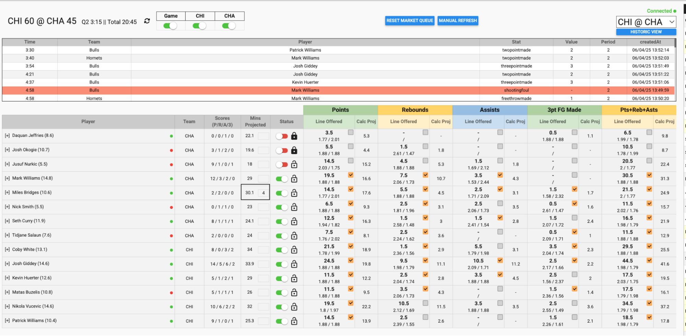
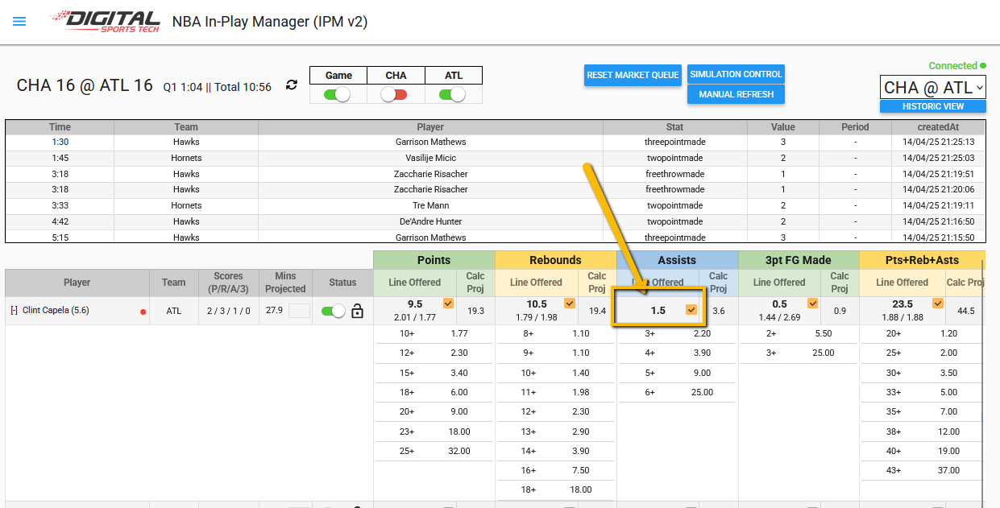
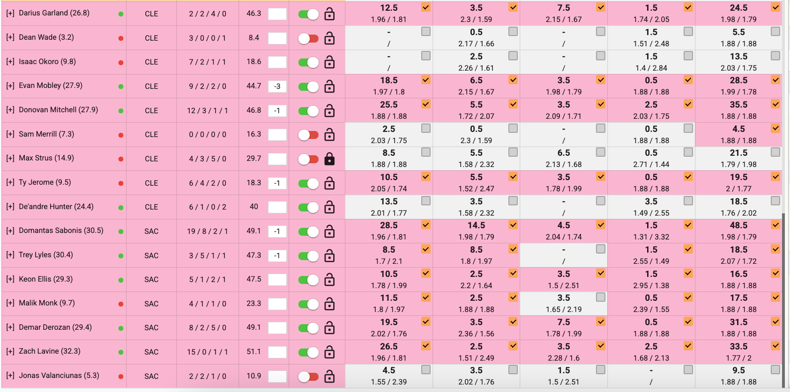
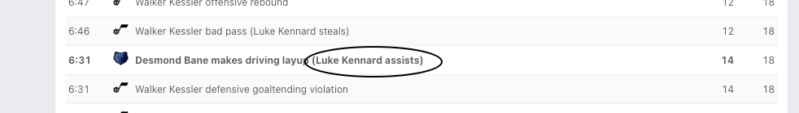
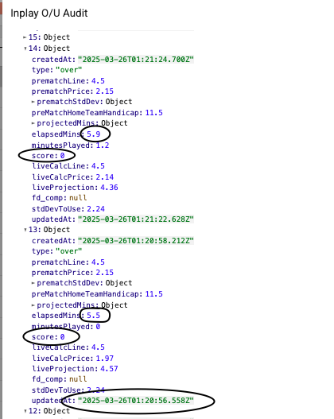
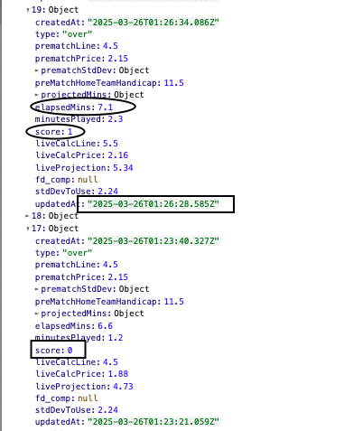
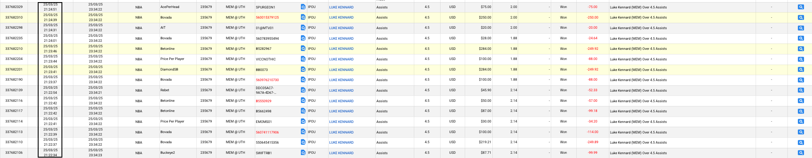

In Play Trading
NBA
When trading one game, use the single game view
When trading multiple games, use the multi game view

The game score, quarter and time is located in the top left. Occasionally this can get stuck. Click the reset icon next to total minutes to resolve the issue.
Each player row displays their current minutes played (next to name), their active O/U lines and prices, their current scores for each stat (P/R/A/3), projected minutes, on/off court stats (red/green dots).
- If the yellow box is checked, that means the stat is active for betting on the front end. If it’s unchecked, the market is currently shut off.
- You should only manually shut a market off if there is a serious issue such as incorrect player score, injury or significant difference to comps that is leading to negative betting activity and can’t be resolved through minute adjustments.
- If you need to adjust a player’s minutes, you can add how many more or less minutes we would like to project the player for
- We should only be adjusting due to significant differences vs comps or a material change in game state (injury, ejection).
- Any mins adjustment you input will stay there until removed. You have to be very careful about leaving a mins change in for long periods of time. Our algorithm should do a good job on its own.
If you need to fully disable a player, make sure you toggle the status column to red to shut that player off and lock him off.
Our system automatically disables OU markets for Rebounds, Assists and PRA when the line is only 0.5 above the current score. For example, if a player has 5 rebounds and the OU line is 5.5, the system will disable this.
- When OU market is auto-disabled, the player is still available for at-least betting. So if a player has a score of 5 rebounds, users can still bet on 7,8,9+ SS rebounds for example.
- This will display as OU line and checkbox but there will be no price next to the market.

Bet Monitoring:
- Bet activity report should always be open on a second monitor and filtered by IP for bet type.
- We have a Live OU report where we can monitor exposure and comps
- We need to be aware of large rushes due to potentially incorrect stats.
- If you see a large rush (5-10+ bets) in quick succession, you may want to disable the player while you investigate.
Technical issues:
- Two most common issues: Incorrect minutes in feed and missing assists
- Incorrect minutes: Typically happens when a new quarter is starting. Radar can send through extra minutes if they do an end of quarter review. You will notice projected minutes go into the 40’s and 50’s. This is your first indicator. Suspend the game/players until this is resolved. Don’t try to put minute downgrades in for each player

- Missing Assist: You will often see a rush on over/ss assists. Suspend the player and report in slack.
- We will want to void the bets if we can determine an assist was missed.
- To see if there was a delayed credit to a players assist, you can go into ESPN play by play log and locate the time of when the player recorded the assist. This screenshot is from the 1st quarter where Kennard recorded an assist at 5.5 elapsed minutes in the game.

- You can then go into our objects and locate the area around 5.5 elapsed minutes to see if the player was credited with an assist. In the screenshot below you can see that Kennard was not credited with an assist at this time in the game (5.5 elapsed minutes, still not credited at 5.9 elapsed minutes).

- You can then locate the object where he was eventually credited with an Assist, which in this case he was credited at 7.1 elapsed minutes.

- In these screenshots I have circled two “updatedAt” times. The hour hand will be misaligned with the time in BAR of when bets came in, but you can use the minute hand to determine when these bets came in.

- In the screenshot above, a rush of Luke Kennard Assist bets came in between 11:22pm and 11:24pm. Using our audit logs we can see that we had an incorrect stat for Luke Kennard assists between 11:20pm and 11:26pm. Therefore this rush of bets came in on a known outcome and should be voided.
Voiding Rules:
- Our rules allow us to void In-Play bets due to technical issues as well as bets on known events.
- We need to void bad bets to protect our product. Post in slack the issue and why we are voiding. Common reasons for voiding are bets beating the feed update on a stat, incorrect minutes through feed, stalled game.
11/21 Update: Trading Adjustments
Hi guys, for NBA IP starting tonight:
- Our priority focus is stopping one-sided activity. Too often we’re seeing $1k-$4k in betting exposure on one side for a player with no manual adjustments. This isn’t just about rushes. It’s about throughout the game a build up all on one side. We want to start manually changing a player’s projection up/down when we see one-sided activity build up ($1k+) and we’re different from comps. This will typically require putting a 1 or -1 for the stat.
- Please only focus on the Live OU Report to watch betting activity come in and make the adjustments. Don’t worry about the bet activity report. Don’t have Oddsjam open. Don’t worry about the front end bet builder updating properly.
Just watch the exposure build up in the Live OU report and decide if we need to suspend a market or put in a projection change.
- If you need to manually change a player’s projection you can now use the Live O/U report to do this. Same as doing it in the IP manager.
- When viewing the Live OU report, data will update automatically. No need to refresh. However, the table is not currently auto-sorting so you need to click the refresh button icon to re-sort the column properly. Do this every few minutes.
- Please continue to keep a tab open for X underdognba with notifications on. We still need to react immediately to injuries and disable players/teammates.